01
Tournage
Premièrement, j’ai filmé la scène réelle dans laquelle le robot allait apparaître.
Olivier Georges
000%
Le robot est un projet de 3D intégrée à une vraie vidéo conçu avec Blender . J’ai modélisé et animé un robot, puis je l’ai intégré dans une vraie vidéo filmée , avec un éclairage et un environnement adaptés au décor.
Modélisateur et animateur 3D - Seul - Projet scolaire - 2025
Voir le projet
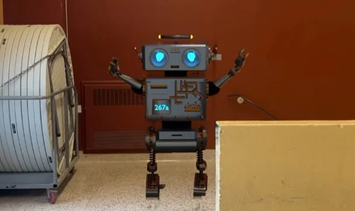
Le projet Le robot était un travail scolaire réalisé dans le cadre du cours d’ animation multimédia . Le but était de modéliser et d’ animer un robot dans Blender , puis de l’ intégrer de façon crédible dans une vidéo réelle . Le plus important était de faire croire que le robot faisait vraiment partie de la scène filmée.
Modélisateur et animateur 3D . J’ai réalisé toutes les étapes du projet : le tournage , la modélisation , l’ animation , l’ éclairage , l’ intégration dans la vidéo , le rendu et le montage final.
Dans ce projet, l’IA n’a pas été utilisée . Les modèles, les visuels et les sons proviennent de ma créativité et des apprentissages effectués pendant le cours.
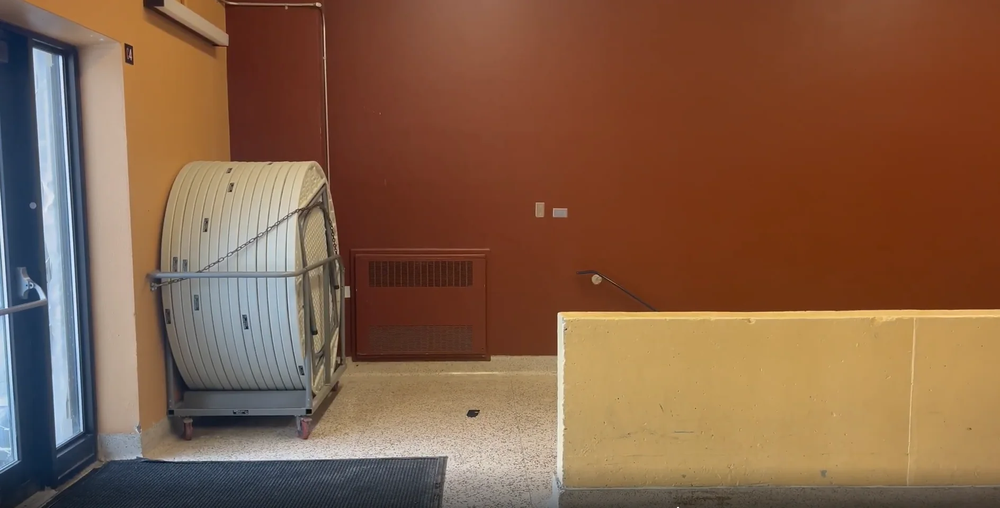
Premièrement, j’ai filmé la scène réelle dans laquelle le robot allait apparaître.
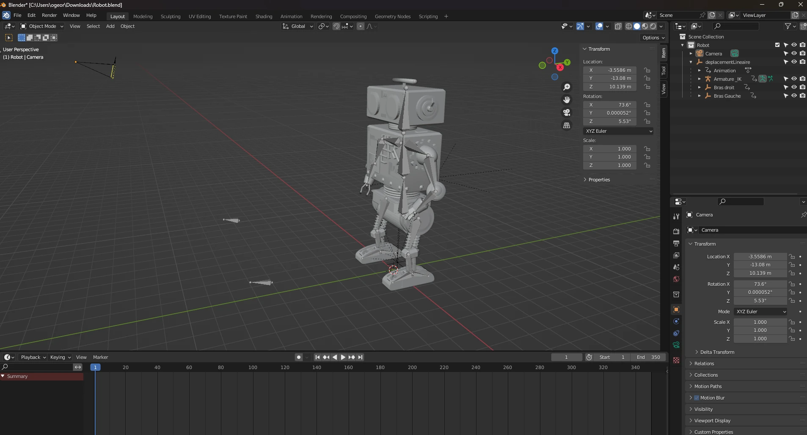
Deuxièmement, j’ai modélisé la forme du robot dans Blender à partir de formes simples, pour bien placer ses proportions avant d’ajouter les détails.
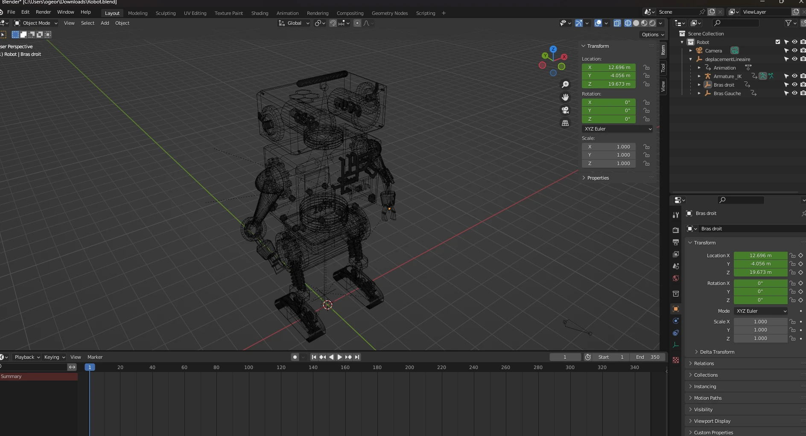
Troisièmement, j’ai ajouté les détails (pièces, articulations, vis) en gardant une géométrie propre , qu’on voit ici en mode fil de fer.
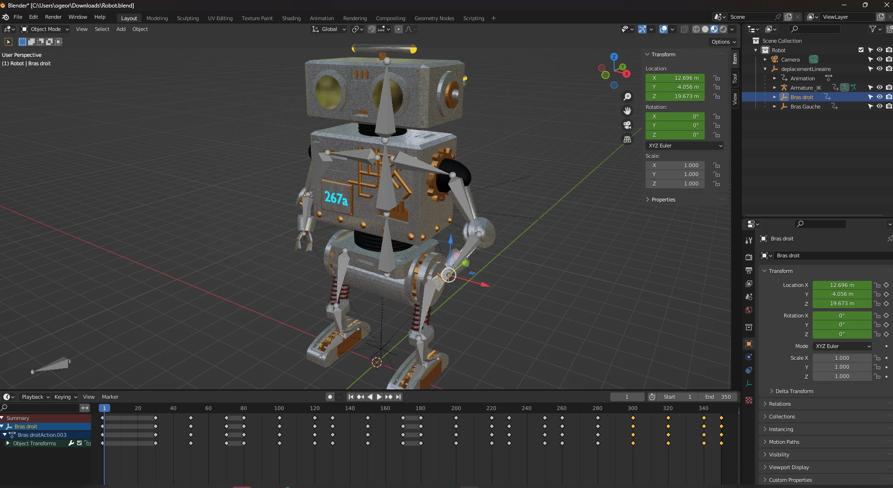
Quatrièmement, j’ai créé les matériaux métalliques, puis j’ai animé le robot avec un squelette et des images clés.
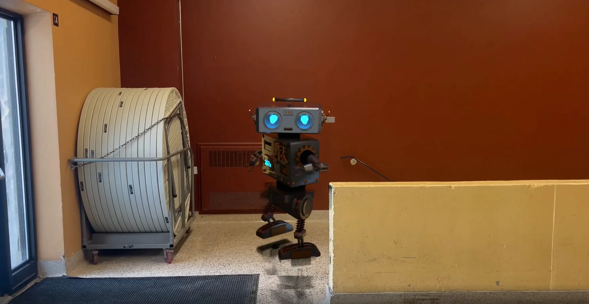
Dernièrement, j’ai placé le robot dans la vidéo en ajustant la caméra et l’ éclairage dans Blender pour que ses ombres soient crédibles, puis j’ai fait le rendu et le montage final avec Premiere Pro et DaVinci Resolve.
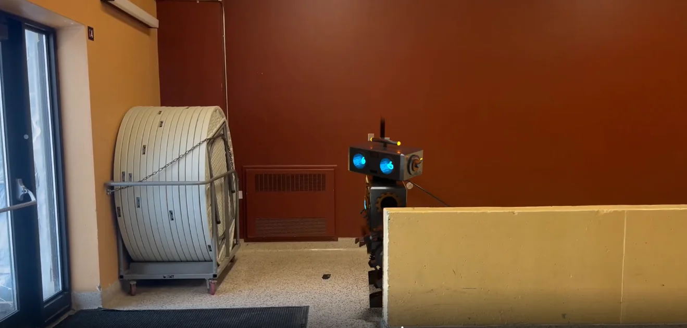
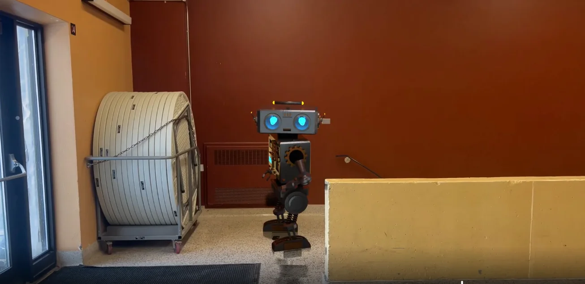
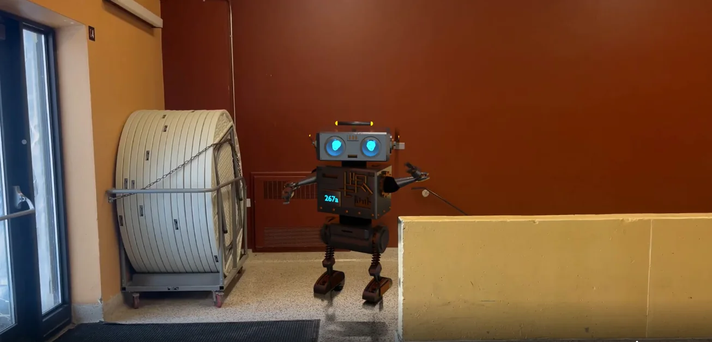
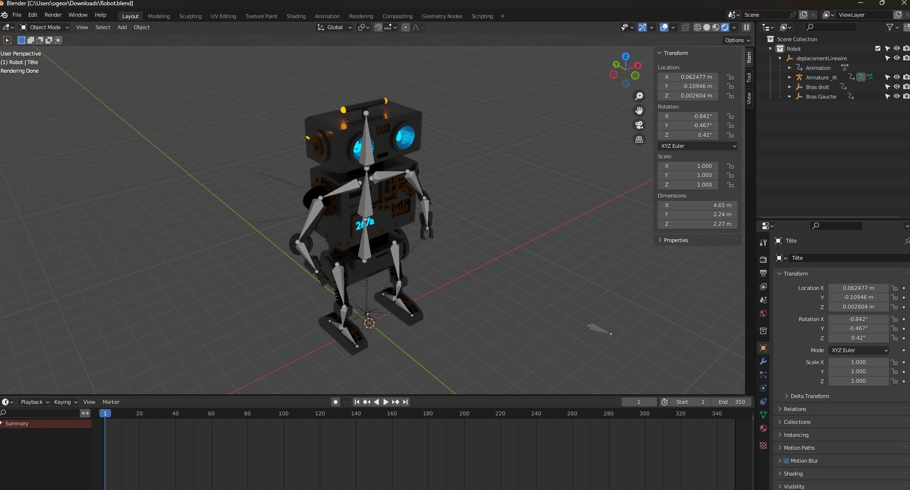
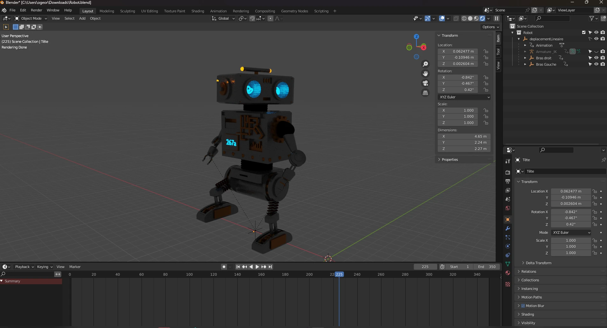
Mettre la vidéo en arrière-plan de la caméra dans Blender, puis ajuster l’angle et la distance focale jusqu’à ce que le sol et les murs s’alignent.
Observer la direction et la couleur de la lumière réelle, puis l’imiter dans Blender.
Ajouter un plan invisible au sol qui reçoit seulement les ombres du robot.
En conclusion, Le robot m’a permis de toucher à toute la chaîne de production d’un effet visuel : du tournage à l’ intégration finale. Ce projet m’a appris à porter attention aux petits détails , comme la lumière et les ombres , qui rendent un objet 3D crédible dans le monde réel.
Retourner aux projets
Projet Le robot
Dans ce projet, l’IA n’a pas été utilisée .
Le tournage, la modélisation, l’animation, l’éclairage, l’intégration dans la vidéo et le montage ont entièrement été faits par moi.
Les modèles, les visuels et les sons proviennent de ma créativité et des apprentissages faits pendant le cours.
Cette partie concerne seulement la page de présentation que vous lisez, pas le projet lui-même.
L’IA Claude (Anthropic) m’a aidé à rédiger et à corriger les textes de présentation à partir de mes notes.
Elle a écrit les textes alternatifs (alt) des images pour l’accessibilité.
Elle a ajusté l’affichage de la page sur mobile, comme les icônes des outils utilisés.
Modélisation, animation et intégration : Olivier Georges
Logiciels : Blender, Adobe Premiere Pro et DaVinci Resolve
Projet scolaire réalisé en 2025, sans but commercial.